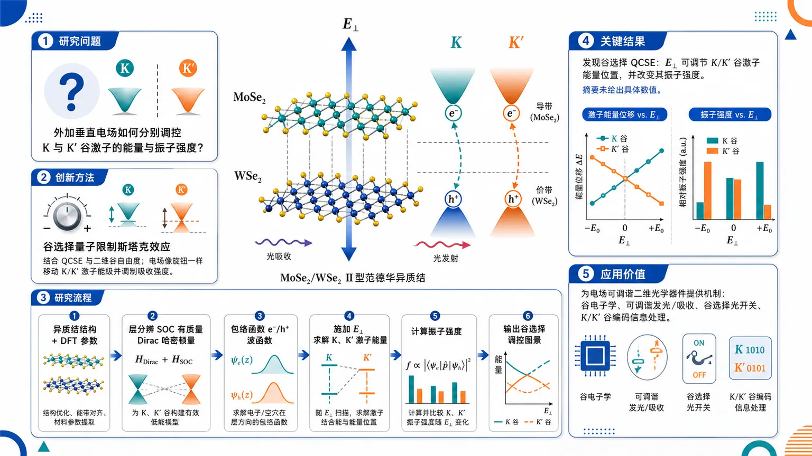
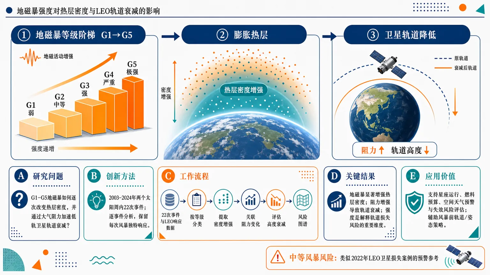
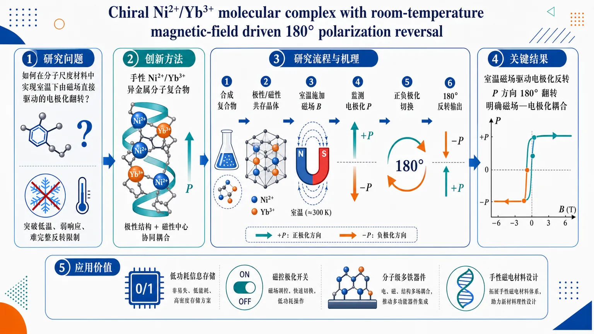
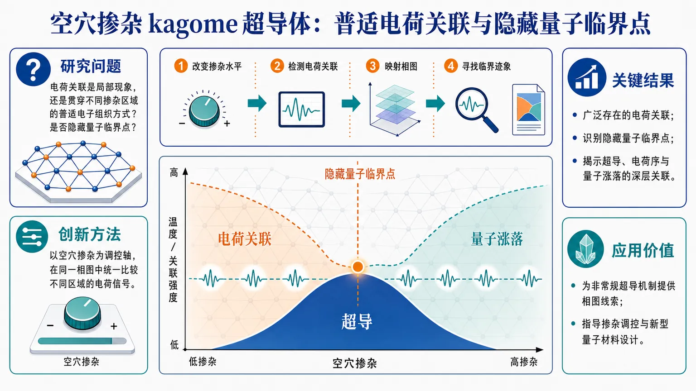

AI × Science 文献日报 2026/07/04
聚焦 AI × 物理 / 化学 / 材料交叉方向，自动过滤明显偏题的医学、教育与社会科学内容，并按主题重新排版，便于快速深读。
AI | 物理 | 化学 | 材料 | 交叉学科
原始候选 11 篇中，已剔除 0 篇明显偏离主线的内容，并从剩余 11 篇主线相关文献中精选 10 篇进入日报页，优先保留 AI × 物理 / 化学 / 材料交叉与关键计算方法工作。
核心关注（ML × ferro / 凝聚态）
3 篇今天的交叉点从BaTiO3、NbOI2等极性势能面上常见的equivariant GNN、MACE、NEP势函数，延伸到分布式量子神经网络处理全局优化与科学发现流程，但摘要未给出可复现实验基准。Ni2+/Yb3+手性分子配合物把室温磁场驱动180°极化翻转推到分子多铁体系，问题从CrI3、CrSBr的DFT+U自旋-晶格耦合建模转向手性-4f/3d-极化耦合描述。空穴掺杂kagome超导体的普适电荷关联和隐藏量子临界点，要求ML相图学习同时纳入电荷序、超导与量子临界特征，而不是只拟合结构或能量。
-
01分布式量子神经网络推动科学发现与复杂优化Advancing scientific discovery and complex optimization through distributed quantum neural networks
📄 摘要：围绕分布式量子神经网络，将量子计算节点与神经网络式参数化模型结合，用于科学发现流程和复杂优化任务。公开摘要仅给出主题与发表信息，未披露网络结构、训练协议、物理体系算例或相对经典算法的性能数值。
💡 亮点：分布式量子神经网络被用于科学发现与复杂优化场景，核心在于把量子资源嵌入可训练模型。若给出可验证材料或优化基准，将有助于评估其在计算材料与人工智能科学中的实际优势。
📐 方法要点：分布式量子神经网络用于科学发现与复杂优化。
🔗 相关工作关联：呼应量子机器学习、神经组合优化、主动学习材料搜索、MACE/NEP势函数。
💡 对你方向的启示：需同任务对比经典GNN和贝叶斯优化，报告量子资源、噪声鲁棒性与泛化收益。
-
02手性Ni2+/Yb3+配合物室温极化翻转Chiral Ni 2+ /Yb 3+ molecular complex with room-temperature magnetic-field driven 180° polarization reversal
📄 摘要：报道手性 Ni2+/Yb3+ 分子配合物中的室温磁场驱动 180° 极化反转。题名表明体系同时包含过渡金属 Ni2+、稀土 Yb3+ 与手性分子结构，关键结论是无需低温即可由磁场切换极化方向；公开摘要未给出磁场强度、极化大小和循环稳定性。
💡 亮点：手性 Ni2+/Yb3+ 分子配合物实现室温磁场驱动 180° 极化反转。该现象把分子手性、稀土磁性与电极化耦合在单一配合物中，指向分子多铁与磁电开关材料。
📐 方法要点：手性Ni2+/Yb3+配合物实现室温磁场驱动极化反转。
🔗 相关工作关联：呼应分子多铁、磁电耦合、手性诱导极化、3d-4f自旋轨道耦合。
💡 对你方向的启示：ML建模应显式编码手性、4f态和磁场变量，避免只用结构描述符预测极化。
-
03空穴掺杂kagome超导体的电荷关联与隐藏临界点Observation of ubiquitous charge correlations and hidden quantum critical point in hole-doped kagome superconductors
📄 摘要：针对空穴掺杂 kagome 超导体，观测到普遍存在的电荷关联，并识别隐藏量子临界点。公开摘要未列出具体化合物、探测手段、掺杂范围或临界指数；题名给出的核心结论是电荷关联并非局域偶发现象，而与超导相图中的量子临界性相关。
💡 亮点：空穴掺杂 kagome 超导体中出现普适电荷关联，并伴随隐藏量子临界点。该结果把电荷涨落、几何阻挫能带与超导配对联系起来，是理解 kagome 超导机制的关键线索。
📐 方法要点：在空穴掺杂kagome超导体中追踪电荷关联与隐藏量子临界点。
🔗 相关工作关联：呼应kagome电荷序、非常规超导、量子临界相图、STM/散射谱图学习。
💡 对你方向的启示：相图ML需融合掺杂、谱函数和电荷纹理，提取临界特征而非只分类相区。
今日摘要
总览：今日条目集中在量子材料、二维异质结光电调控、量子信息硬件与神经接口器件。代表性工作包括空穴掺杂 kagome 超导体中的普适电荷关联与隐藏量子临界点、手性 Ni2+/Yb3+ 分子配合物的室温磁场驱动 180° 极化翻转，以及 MoSe₂/WSe₂ 中谷选择量子限制斯塔克效应的理论建模。
热点：量子材料方向继续围绕强关联与多自由度耦合展开，kagome 超导体的电荷序、超导与量子临界性成为核心线索。二维范德华异质结研究从能带对准推进到可电场编程的谷选择激子响应，面向谷光电子学与可调量子发光。量子技术条目体现工程化倾向，室温单光子源和超快扫描隧道显微技术分别指向可部署量子光源与极限时空分辨测量。人工智能与优化方面，分布式量子神经网络被放在科学发现和复杂优化框架下，但公开摘要信息不足以判断具体算例与性能增益。
今日文献
10 篇 · 6 含图深析-
01
📊 含图深析
📄 摘要：围绕分布式量子神经网络，将量子计算节点与神经网络式参数化模型结合，用于科学发现流程和复杂优化任务。公开摘要仅给出主题与发表信息，未披露网络结构、训练协议、物理体系算例或相对经典算法的性能数值。
💡 亮点：分布式量子神经网络被用于科学发现与复杂优化场景，核心在于把量子资源嵌入可训练模型。若给出可验证材料或优化基准，将有助于评估其在计算材料与人工智能科学中的实际优势。
📖 展开分析 + 配图
研究问题如何将量子神经网络扩展到分布式多节点协同框架，用于处理单体模型难以承载的科学发现问题与高维复杂优化搜索，例如计算材料等多变量科学任务。创新方法Aha 点是把量子神经网络从单一量子模型扩展为“分布式量子神经网络”：多个量子处理单元或节点协同学习与优化，将量子计算的搜索能力、神经网络的表达能力和分布式架构的可扩展性结合起来。工作流程输入复杂科学问题或高维优化目标 → 将问题编码为量子神经网络可处理的状态、参数或目标函数 → 分发到多个量子节点/量子处理单元并行协同计算 → 通过训练或优化更新网络参数 → 汇总各节点结果 → 输出候选科学发现、优化解或高质量搜索结果。关键结果论文主张分布式量子神经网络能够促进科学发现，并可用于复杂优化与高维优化任务；但现有摘要未提供具体性能数值、对比基线、实验平台、量子比特规模或统计显著性结果。应用价值为计算材料、复杂系统建模、科学假设生成和高维优化提供一种潜在可扩展的量子机器学习工具，可作为未来量子计算辅助科学发现与工程优化的基础框架。核心概览
该论文聚焦分布式量子神经网络，用于科学发现与复杂优化任务，属于量子计算、神经网络与材料/科学计算交叉方向；但摘要未详述具体模型、任务与实验验证。
方法要点
- 采用“分布式量子神经网络”作为核心框架，但摘要未详述其量子线路结构。
- 研究目标面向科学发现与复杂优化任务，但摘要未说明具体问题类型或应用场景。
- 涉及量子计算与神经网络结合，可能属于量子机器学习方向，但摘要未给出训练策略。
- 主题与材料计算存在交叉关联，但摘要未披露材料数据集或计算流程。
- 摘要未说明分布式节点如何划分、通信如何实现、是否使用纠缠或参数共享等技术细节。
关键结果
- 摘要明确指出该工作围绕分布式量子神经网络推进科学发现和复杂优化。
- 摘要表明其研究方向跨越量子计算、神经网络和材料计算。
- 摘要未披露任何实验结果、性能指标、对比基线或数值优势。
- 摘要未说明是否在真实量子硬件、模拟器或混合量子—经典平台上验证。
创新性判断
- 可能的新颖点在于将“分布式量子神经网络”用于科学发现与复杂优化，而非仅限于常规量子机器学习任务；但摘要未详述，判断不确定。
- 若其确实解决了量子神经网络在规模扩展、分布式协同或复杂优化中的应用问题，可能具有方法层面的创新性；但摘要未提供结构与实验证据。
- 与材料计算结合可能是应用创新点之一，但摘要未说明具体材料问题、数据来源或性能提升，因此只能作为有限推断。
- 总体看，摘要呈现的是方向性贡献，尚不足以判断其相对同类工作的实质技术突破。
-
02
📊 含图深析
📄 摘要：研究 MoSe₂/WSe₂ 二型范德华异质结在外电场下的谷依赖光–物质相互作用，即谷选择量子限制斯塔克效应。方法结合 DFT 获取能带参数、包络函数求载流子波函数，并用含层分辨自旋–轨道耦合的有质量狄拉克哈密顿量，分别计算 K 与 K′ 谷的激子能量和振子强度变化。
💡 亮点：MoSe₂/WSe₂ 二型异质结被预测具有电场可调的谷选择量子限制斯塔克效应。DFT、包络函数与有质量狄拉克模型的组合，使 K/K′ 谷激子能量和振子强度可被分开追踪，适合谷光电子器件设计。
📖 展开分析 + 配图

研究问题MoSe₂/WSe₂ 范德华 II 型异质结中，外加垂直电场如何分别调控 K 与 K′ 谷激子的能量和振子强度，从而实现谷选择性的光学可调性。创新方法提出“谷选择量子限制斯塔克效应”：把传统量子限制斯塔克效应与二维异质结的谷自由度结合，用外电场像旋钮一样分别移动 K/K′ 谷激子能级并改变其光吸收强度；模型上结合 DFT 能带参数、包络函数载流子波函数，以及含层分辨自旋轨道耦合的有质量 Dirac 哈密顿量。工作流程输入 MoSe₂/WSe₂ II 型异质结结构与 DFT 能带参数 → 建立层分辨、自旋轨道耦合的有质量 Dirac 哈密顿量 → 用包络函数描述电子与空穴在不同层中的波函数 → 施加外电场并分别求解 K、K′ 谷激子能量 → 计算电场下不同谷激子的振子强度 → 输出谷选择的能量位移与光学强度调控图景。关键结果发现 MoSe₂/WSe₂ 异质结中存在谷选择量子限制斯塔克效应：外电场能够调节 K 与 K′ 谷激子的能量位置，也能改变它们的振子强度，说明该异质结的谷选择光学响应可由电场主动控制；摘要未给出具体能量位移、电场范围或强度变化数值。应用价值为二维范德华异质结中的电场可调谐光学器件提供理论机制，可用于设计谷电子学器件、可调谐发光/吸收器件、谷选择光开关以及基于 K/K′ 谷编码的信息处理单元。核心概览
该论文研究 MoSe₂/WSe₂ 范德华Ⅱ型异质结在外电场作用下的谷选择量子限制斯塔克效应，属于二维半导体异质结、谷电子学与可调谐光学响应方向。
方法要点
- 采用 DFT 计算或提取 MoSe₂/WSe₂ 异质结的能带相关参数。
- 使用包络函数方法求解载流子波函数。
- 构建包含层分辨自旋–轨道耦合的有质量狄拉克哈密顿量。
- 分别针对 K 与 K′ 谷计算激子能量的电场调谐行为。
- 分别针对 K 与 K′ 谷计算激子振子强度的电场调谐行为。
关键结果
- 摘要明确表明，该工作关注外电场驱动下 MoSe₂/WSe₂ Ⅱ型异质结的光学可调谐性。
- 摘要明确表明，研究对象包括 K 与 K′ 两个谷的激子能量和振子强度。
- 摘要表明其效应具有“谷选择”特征，即 K 与 K′ 谷的响应被分别处理并可能不同。
- 具体调谐幅度、能量变化趋势、振子强度增强或减弱程度等，摘要未详述。
创新性判断
- 可能的新颖点在于将外电场调控、Ⅱ型 MoSe₂/WSe₂ 范德华异质结、谷选择激子响应和量子限制斯塔克效应结合起来研究；但具体相对已有工作的突破程度，摘要未详述。
- 引入“层分辨自旋–轨道耦合”的有质量狄拉克哈密顿量，可能使模型更适合描述层间异质结中谷、自旋与层自由度耦合的光学响应；但该建模方案是否首次提出，摘要无法确定。
- 同时计算 K/K′ 谷的激子能量与振子强度电场调谐，可能为电控谷选择光学器件提供理论依据；但器件层面的验证或性能指标，摘要未详述。
-
03
📊 含图深析
📄 摘要：针对 2003–2024 年两个太阳周期内 22 次 G1–G5 地磁暴，采用逐事件分析而非叠加历元平均，评估热层密度增强及其对低地球轨道卫星大气阻力和轨道衰减的影响。背景动机包括 2022 年 2 月中等磁暴导致 38 颗星链卫星损失；公开摘要未给出各等级密度增幅或轨道衰减数值。
💡 亮点：逐事件分析覆盖 G1–G5 共 22 次磁暴，直接关联热层密度扰动与低轨卫星轨道衰减。该框架强调极端空间天气下材料、器件与航天平台服役环境的定量风险。
📖 展开分析 + 配图

研究问题不同强度（G1–G5）的地磁暴如何逐次改变热层密度，并通过增强大气阻力加速低轨卫星轨道衰减？画面可呈现为“地磁暴等级阶梯→膨胀热层→卫星轨道降低”的因果链。创新方法以2003–2024年两个太阳周内22次G1–G5地磁暴为样本，进行“逐事件”分析，而非只做平均叠加统计；Aha点是保留每次地磁暴的独特响应差异，把风暴强度、热层密度增强、LEO阻力和轨道衰减放在同一事件框架中对照。工作流程输入22次G1–G5地磁暴事件与低轨卫星环境响应数据；按地磁暴等级分类；逐事件提取热层密度增强信号；关联卫星大气阻力变化；评估轨道高度衰减影响；输出不同强度地磁暴对应的LEO轨道风险图谱。关键结果地磁暴会显著增强热层密度，使低轨卫星遭遇更强大气阻力并产生轨道衰减；研究覆盖从弱G1到极强G5的完整强度范围，显示风暴强度是解释热层膨胀和卫星轨道损失风险的重要维度，但摘要未给出具体数值增幅或阈值。应用价值为低轨卫星星座运行、轨道维持燃料预算、空间天气预警和卫星失效风险评估提供事件级依据；尤其可用于解释类似2022年Starlink卫星损失的中等地磁暴风险，帮助运营方在风暴来临前调整轨道和姿态策略。核心概览
该论文属于空间天气与低轨卫星轨道动力学方向，针对2003–2024年22次G1–G5磁暴，逐事件分析磁暴强度对热层密度增强及低轨卫星轨道衰减/大气阻力的影响。
方法要点
- 研究对象覆盖2003–2024年两个太阳活动周内的22次G1–G5等级磁暴事件。
- 采用“逐事件分析”框架，考察不同磁暴强度对热层密度增强的影响。
- 将热层密度变化与低轨卫星大气阻力、轨道衰减联系起来分析。
- 研究动机之一是解释或借鉴2022年2月较弱磁暴导致38颗星链卫星损失的事件。
- 摘要明确指出其方法不同于以CHAMP、GRACE数据为主的叠加历元统计研究。
- 具体使用的数据源、密度模型、轨道衰减计算方法、卫星样本等，摘要未详述。
关键结果
- 摘要明确表明论文关注磁暴强度与热层密度增强、低轨卫星大气阻力之间的关系。
- 摘要暗示不同等级磁暴可能对低轨卫星轨道衰减产生可区分影响，但具体定量结果摘要未详述。
- 关于G1–G5各等级磁暴造成的密度增幅、阻力增强或轨道衰减幅度，摘要未给出具体数值。
- 是否发现非线性响应、阈值效应、事件间差异或与星链事件相关的机制，摘要未详述。
创新性判断
- 可能的新颖点在于采用2003–2024年、跨两个太阳周的G1–G5磁暴“逐事件”分析，而非传统叠加历元平均方法；这一点可从摘要直接推断。
- 相比依赖CHAMP、GRACE的统计研究，该工作可能更强调单次磁暴事件对热层密度和LEO轨道衰减的实际影响差异；但具体数据体系和比较对象摘要未详述。
- 将2022年星链卫星损失事件作为研究动机，说明其关注弱至中等磁暴对商业低轨星座的风险，这可能具有应用层面的新意。
- 创新性的强弱仍不确定，因为摘要未说明具体模型、数据来源、验证方式及相对已有工作的定量改进。
-
04
📊 含图深析
📄 摘要：以广州公交网络为案例，构建“结构–功能–公平”评价框架，整合 6 个拓扑指标：网络密度、覆盖率、站点覆盖、线路长度、重复系数、非直线系数，以及 5 个功能指标：供给指数、人口覆盖、基尼系数等。目标是识别客流下降、结构低效与空间不公平并存的公交网络问题。
💡 亮点：该工作把公交网络拓扑、服务功能与公平性指标放入统一评价框架，并用于广州案例。虽不属于凝聚态或材料方向，其多指标网络分类方法可与复杂网络优化建模形成方法层面的交叉。
📖 展开分析 + 配图
研究问题如何对广州这样超大城市的公交网络进行综合诊断：不仅看线路密度、站点覆盖等“网络结构”，还同时衡量服务供给、人口覆盖与资源分配公平性，从而识别不同类型公交网络区域并提出优化方向。创新方法提出“结构–功能–公平”三维综合评价框架，把公交网络从单一拓扑分析扩展为多维体检：结构层刻画线网密度、覆盖率、站点覆盖、线路长度、重复系数、非直线系数；功能层刻画供给指数、人口覆盖等服务能力；公平层引入基尼系数等指标，突出公交资源是否均衡配置。工作流程输入广州公交线路、站点、服务供给、人口分布等基础数据；计算结构层、功能层与公平层评价指标；形成综合评价指标体系；据此对公交网络进行类型识别与问题定位；最终输出广州公交网络分类结果及面向覆盖不足、线路重复、服务不均等问题的优化建议。关键结果研究明确建立了面向公交网络的“结构–功能–公平”综合评价体系，并将其用于广州公交网络分类与优化分析；结果呈现出公交网络评价可从线网形态、服务能力和公平分配三方面同步展开，但摘要未给出具体分类数量、优化后提升幅度或量化性能结果。应用价值为城市公交规划提供可视化、可量化的诊断工具，帮助识别覆盖薄弱区、线路冗余区、服务供需不匹配区和公平性不足区；可支撑广州及类似超大城市进行公交线网调整、站点布局优化和公共交通资源公平配置。核心概览
论文以广州公交网络为案例，构建“结构–功能–公平”综合评估框架，用于公交线路分类与网络优化诊断，属于公共交通网络评价与优化研究方向。
方法要点
- 构建包含“结构、功能、公平”三个维度的公交网络综合评价框架。
- 结构维度采用网络密度、覆盖率、站点覆盖、线路长度、重复系数、非直线系数等 6 个拓扑指标。
- 功能与公平维度采用供给指数、人口覆盖、基尼系数等 5 个指标。
- 将上述指标用于公交线路分类，以识别不同线路或区域的网络特征。
- 基于综合评价结果开展公交网络优化诊断；具体诊断流程和算法摘要未详述。
关键结果
- 摘要明确表明，该研究形成了面向广州公交网络的“结构–功能–公平”评估框架。
- 该框架可同时刻画公交网络拓扑形态、服务供给能力与公平性特征。
- 研究将多类指标用于线路分类和优化诊断。
- 摘要未详述具体分类结果、优化建议、量化改进幅度或验证效果。
创新性判断
- 可能的新颖点在于将传统公交网络拓扑评价与功能供给、公平性评价整合到同一框架中，而非仅从结构效率或覆盖水平单一维度分析。
- 将综合指标体系直接用于“线路分类”和“优化诊断”，可能增强了评价结果对实际公交规划的解释性和应用性。
- 以广州这样的大城市公交网络为案例，具备一定现实复杂性和应用价值。
- 但摘要未说明是否提出新的模型、算法或权重方法，因此其方法论创新强度无法确定。
-
05
📊 含图深析
📄 摘要：报道手性 Ni2+/Yb3+ 分子配合物中的室温磁场驱动 180° 极化反转。题名表明体系同时包含过渡金属 Ni2+、稀土 Yb3+ 与手性分子结构，关键结论是无需低温即可由磁场切换极化方向；公开摘要未给出磁场强度、极化大小和循环稳定性。
💡 亮点：手性 Ni2+/Yb3+ 分子配合物实现室温磁场驱动 180° 极化反转。该现象把分子手性、稀土磁性与电极化耦合在单一配合物中，指向分子多铁与磁电开关材料。
📖 展开分析 + 配图

研究问题如何在分子尺度材料中实现室温下由磁场直接驱动的电极化翻转，突破传统分子磁电效应多依赖低温、响应弱或难以实现完整反转的限制。创新方法构筑手性 Ni²⁺/Yb³⁺异金属分子复合物，将手性极性结构、过渡金属 Ni²⁺与稀土 Yb³⁺磁性中心组合在同一分子框架中，使外加磁场能够耦合并调控分子电极化方向，实现 180°极化反转。工作流程合成 Ni²⁺/Yb³⁺手性异金属分子复合物 → 获得具有极性与磁性中心共存的分子晶体/材料 → 在室温条件下施加外部磁场 → 监测电极化方向变化 → 观察磁场诱导的正负极化切换 → 输出 180°电极化反转现象。关键结果该手性 Ni²⁺/Yb³⁺分子复合物在室温下表现出磁场驱动的电极化反转，极化方向可发生 180°翻转，显示出明确的磁场—电极化耦合行为，是分子多铁/磁电材料中具有代表性的室温可控极化响应。应用价值该研究为室温分子磁电器件提供了可视化原型：用磁场像开关一样翻转电极化方向，可用于低功耗信息存储、磁控极化开关、分子级多铁器件和手性磁电功能材料设计。核心概览
该论文研究手性 Ni²⁺/Yb³⁺ 分子配合物，属于分子磁电/手性多功能材料方向；摘要称其可在室温下实现磁场驱动的 180° 极化反转。
方法要点
- 研究对象是含 Ni²⁺ 与 Yb³⁺ 的手性分子配合物。
- 关注磁场对电极化方向的调控，即磁场驱动的极化反转。
- 现有摘要未详述晶体结构解析、磁电测量方法、磁场施加方式或极化测试流程。
- 摘要未详述 Ni–Yb 间磁电耦合的具体物理机制。
关键结果
- 摘要明确称该手性 Ni²⁺/Yb³⁺ 分子配合物在室温下可实现磁场驱动的 180° 极化反转。
- 该结果指向一种室温磁场调控电极化的分子体系。
- 摘要未给出极化大小、所需磁场强度、滞回行为、开关速度或循环稳定性。
- 摘要未给出结构—性能关联或具体磁电耦合参数。
创新性判断
- 可能的新颖点在于：将手性分子配合物、3d–4f 金属中心 Ni²⁺/Yb³⁺ 与室温磁场驱动极化反转结合起来。
- 若摘要表述属实，室温下实现 180° 极化反转在分子磁电材料中可能具有较高吸引力，因为许多分子磁电效应往往受限于低温或较弱响应；但摘要未提供对比数据，创新程度无法严格评估。
- Ni²⁺/Yb³⁺ 异金属组合可能用于构建磁各向异性与电极化耦合，但具体机制摘要未详述，不能进一步判断。
- 手性结构可能与极化、磁电耦合或非中心对称性有关，但摘要未提供晶体学信息，因此只能作为合理推测而非确定结论。
-
06
📊 含图深析
📄 摘要：针对空穴掺杂 kagome 超导体，观测到普遍存在的电荷关联，并识别隐藏量子临界点。公开摘要未列出具体化合物、探测手段、掺杂范围或临界指数；题名给出的核心结论是电荷关联并非局域偶发现象，而与超导相图中的量子临界性相关。
💡 亮点：空穴掺杂 kagome 超导体中出现普适电荷关联，并伴随隐藏量子临界点。该结果把电荷涨落、几何阻挫能带与超导配对联系起来，是理解 kagome 超导机制的关键线索。
📖 展开分析 + 配图

研究问题空穴掺杂 kagome 超导体的相图中，电荷关联是否只是局部样品现象，还是贯穿不同掺杂区域的普适电子组织方式；这些电荷关联背后是否隐藏着一个未被常规相边界直接显露的量子临界点。创新方法将空穴掺杂作为调控轴，把不同掺杂区域中的电荷关联放在同一 kagome 超导相图中比较，核心 Aha 点是把零散的电荷信号统一解释为“普适电荷关联”，并进一步从其演化趋势中指认一个隐藏量子临界点。工作流程以空穴掺杂 kagome 超导体为研究对象，改变或比较不同空穴掺杂水平；检测各区域的电荷关联信号；将电荷关联强度、范围或特征随掺杂变化映射到相图；寻找异常增强、消失或连续演化的临界迹象；最终输出包含普适电荷关联与隐藏量子临界点的 kagome 超导相图。关键结果在空穴掺杂 kagome 超导体中观察到广泛存在的电荷关联，说明电荷组织是该类体系相图中的核心特征；研究进一步识别出一个隐藏量子临界点，提示 kagome 超导、电荷序和量子涨落之间存在深层关联。应用价值为理解 kagome 超导体中的非常规超导机制提供相图线索，把电荷关联和量子临界性作为解释超导起源的重要视觉坐标；也为通过掺杂调控设计新型量子材料、寻找更优超导态提供方向。核心概览
该论文研究空穴掺杂笼目超导体中的电荷关联现象，属于量子材料/非常规超导与电荷有序方向；标题声称观测到普遍电荷关联及隐藏量子临界点。
方法要点
- 研究对象为空穴掺杂的笼目超导体，但具体化合物体系摘要未详述。
- 关注电荷关联/电荷相关性在掺杂体系中的表现。
- 论文声称识别或观测到“隐藏量子临界点”，但使用的实验探针或判据摘要未详述。
- 是否结合输运、散射、显微谱学或热力学测量等方法，摘要未详述。
- 掺杂范围、样品制备方式、数据分析模型等摘要未详述。
关键结果
- 在空穴掺杂笼目超导体中观察到电荷关联具有“普遍性”。
- 论文声称发现或揭示了一个隐藏量子临界点。
- 该结果暗示电荷关联可能与笼目超导体的量子临界行为相关。
- 具体临界掺杂、关联长度、能标、温度依赖以及与超导转变温度的定量关系，摘要未详述。
创新性判断
- 可能的新颖点在于将“普遍电荷关联”与“隐藏量子临界点”联系起来，用于理解空穴掺杂笼目超导体中的竞争或交织量子态；但这一判断仅基于标题和摘要信息，存在不确定性。
- 若论文确实跨多个掺杂水平或样品系统证明电荷关联普遍存在，则相对单一材料或单一掺杂点研究可能更具概括性；但摘要未说明具体范围。
- “隐藏量子临界点”的观测若通过非常规实验信号或间接外推得到，可能是该工作的核心创新；但具体证据链摘要未详述，无法评估其充分性。
-
07
📄 摘要：韩国标准科学研究院开发室温单光子源，集成在紧凑 19 英寸机架式设备中，无需低温制冷。装置设计为通电即可工作的即插即用系统，使量子光源从实验室台架走向现场部署；公开摘要未说明发射材料、单光子纯度、亮度、波长或稳定运行时间。
💡 亮点：19 英寸机架式室温单光子源取消低温制冷并实现即插即用。对量子通信、量子传感和片上光量子实验而言，关键价值在于把单光子硬件推向可部署形态。
-
08
📄 摘要：超快扫描隧道显微术首次达到量子力学空间–时间测量极限。报道以海森堡不确定性原理为背景，强调位置–动量受基本限制，而位置与时间之间不存在同类不确定性关系；公开摘要未给出时间分辨率、空间分辨率、样品体系或泵浦–探测实现细节。
💡 亮点：超快扫描隧道显微术被推进到量子力学空间–时间极限，可望同时追踪原子尺度结构与超快电子动力学。对凝聚态体系中的非平衡相变、载流子弛豫和局域激发测量尤其相关。
-
09
📄 摘要：面向光遗传学同步光刺激与电生理记录，采用 AlGaN/GaN 异质结场效应晶体管替代传统金属微电极制备脑神经探针，并与 LED 光电极探针键合形成集成器件。AlGaN/GaN HFET 探针具有高灵敏度和生物相容性，目标是提升神经信号采集质量并抑制光刺激引入的记录伪影。
💡 亮点：AlGaN/GaN HFET 被集成到光电极神经探针中，用于同步光刺激和电信号读取。宽禁带异质结器件的高灵敏度与光伪影抑制能力，为半导体材料进入神经接口提供具体路径。
-
10
📄 摘要：利用闭环颅内脑–机接口读取人类前岛叶自发高伽马活动，并将该信号用于调控价值型决策。结果显示，持续存在的神经活动涨落可因果性地改变选择行为，说明人类决策变异不仅来自外部刺激或噪声，也受内源脑态影响；公开摘要未给出受试者数量、频段范围和效应量。
💡 亮点：闭环颅内接口把前岛叶高伽马自发涨落与价值选择建立因果联系。该神经调控范式虽偏生命科学，但在闭环读出、实时反馈和高维信号解码方面与人工智能科学方法相通。